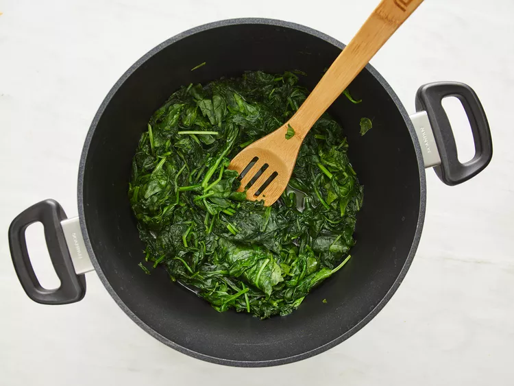
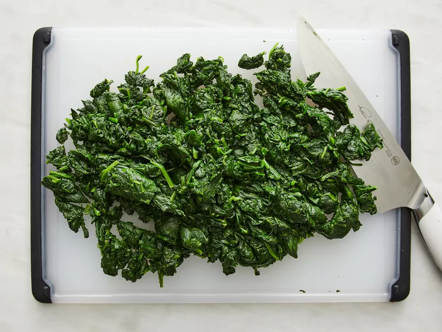
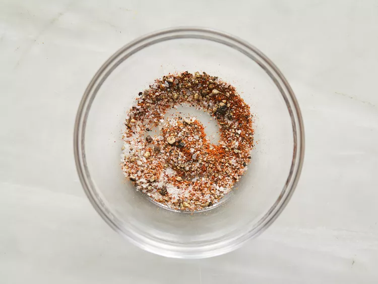
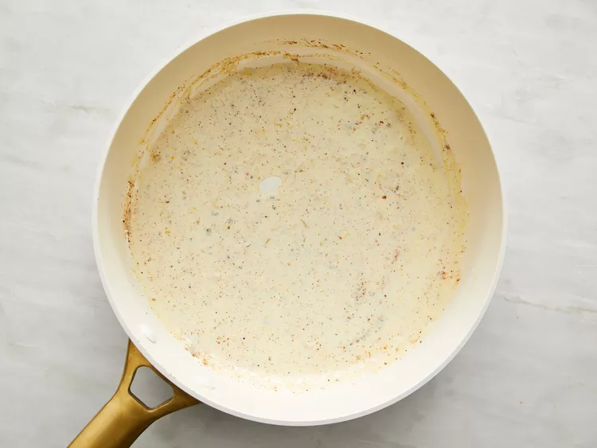
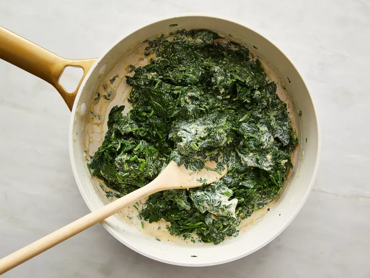
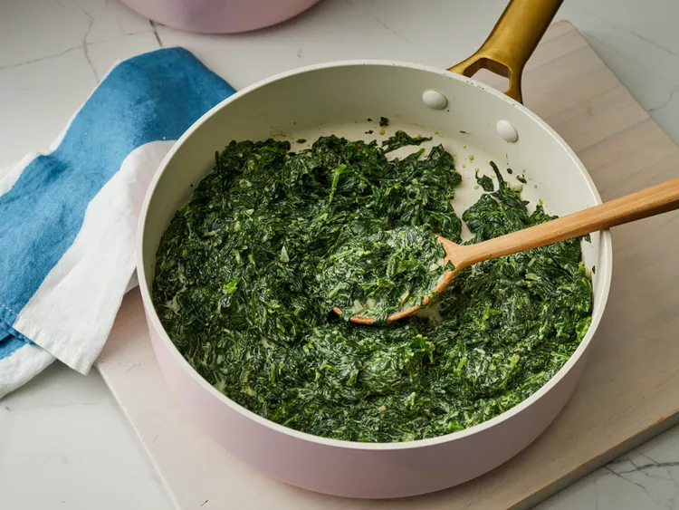

This somewhat healthy creamed spinach recipe is lighter than traditional creamed spinach. It is a little easier, a little quicker, and a little more contemporary. Have all your ingredients ready to go ahead of time. It's a classic steak side dish.
Heat olive oil in a large soup pot over high heat; add spinach, cover, and cook for 1 minute. Uncover and gently stir until most of the leaves are bright green and wilted, about 2 minutes.
Quickly drain spinach in a strainer and transfer to a plate lined with 4 or 5 paper towels. Once cool enough to handle, squeeze as much liquid from the spinach as possible. Transfer spinach to a cutting board and coarsely chop.
Mix cayenne pepper, nutmeg, salt, and black pepper in a small bowl.
Melt butter in a large skillet over medium heat; stir in shallot and cook until just barely golden and translucent, 3 to 4 minutes. Stir in seasoning mixture and pour in cream; increase heat to medium-high and simmer until the cream sauce reduces by about half, about 5 minutes. Stir in lemon zest.
Reduce heat to low and toss spinach with cream sauce in skillet. Cook and stir until spinach is heated through and coated, about 2 minutes. Stir in Parmigiano-Reggiano cheese until thoroughly combined.
Serve Immediately
